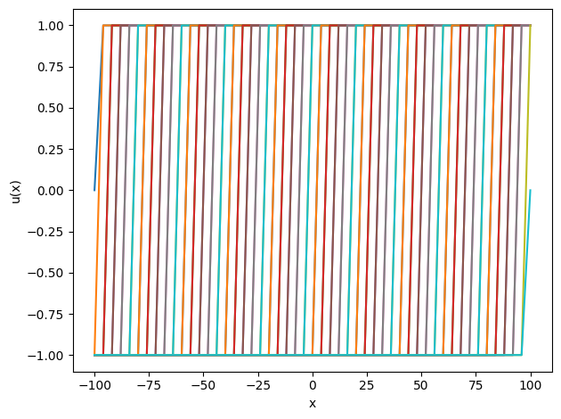
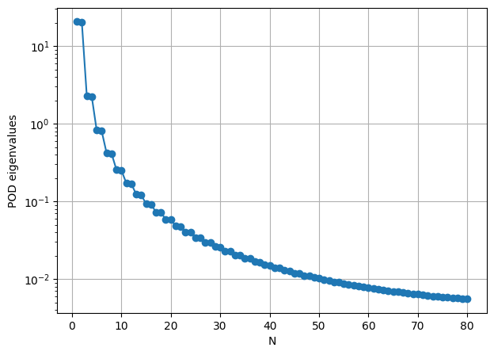
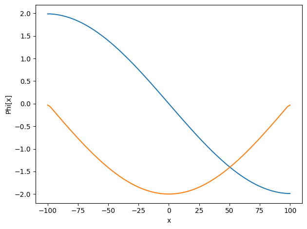
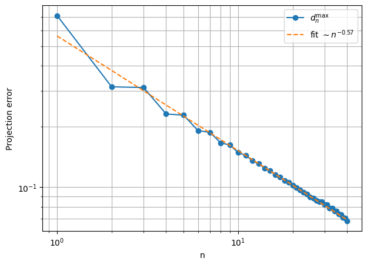

tp2
TP2: Kolmogorov
#Install package
import sys
!{sys.executable} -m pip install numpy
!{sys.executable} -m pip install matplotlib
# import packages
import numpy as np
import matplotlib.pyplot as plt
============================================================
TP Kolmogorov
Goal : Show that for
$u(x,\mu)=tanh(\frac{x-\mu}{\delta}).$
the Kolmogorov $N$-width is not small for $N$ small
============================================================
1/ POD basis
Complete the codes that generate the training snapshots and compute the POD basis with the function generate_translation_snapshots(Ne=400,x0=-100,x1=100,delta=0.001,n_mu=100) and Construct_RB(NumberOfSnapshots=100,Ne=100,NumberOfModes=80)
def generate_translation_snapshots(Ne=400,x0=-100,x1=100,delta=0.001,n_mu=100):
"""
Ne+1 mesh elements
mesh starting point x0
mesh last point x1
jump width: delta
number of tested parameters n_mu<Ne
"""
# fixed mesh
x = ...
# uniform mu
# n_mu values between x0 and x1
mu_values = ...
snapshots = []
for mu in mu_values:
u = ...
...
return np.array(snapshots), x, mu_values # should return snapshots, mesh, mu_values
## Test
snapshots,x,_=generate_translation_snapshots(Ne=50)
for u in snapshots:
plt.plot(x,u)
plt.xlabel("x")
plt.ylabel("u(x)")
plt.tight_layout()
plt.show()

""" OFFLINE """
""" POD """
def Construct_RB(NumberOfSnapshots=100,Ne=100,NumberOfModes=80):
"""
Number of training parameters: NumberOfSnapshots
Mesh size : Ne=100
Number of basis functions: NumberOfModes
"""
Snapshots,x,_=generate_translation_snapshots(Ne=Ne)
NumberOfSnapshots=len(Snapshots)
print("Number of snapshots:", NumberOfSnapshots)
## SVD ##
# you can use (.,.)_l2 or the scaled scalar product 1./|Omega| * (.,.)_l2
# indication : you can use the previous finite volume TP
# We first compute the correlation matrix C_ij = (u_i,u_j)_(l2)
# Then, we compute the eigenvalues/eigenvectors of C
#SVD: C eigenVectors=eigenValues eigenVectors
# sort the eigenvalues
# retrieve N=NumberOfModes first eigenvalues
...
print("eigenvalues: ",EigenValues)
RIC=... #must be close to 0
print("Relativ Information Content (must be close to 0): ",RIC)
ReducedBasis = ...
# orthogonality test
"""
for i in range(NumberOfModes):
MatVecProduct = L2.dot(ReducedBasis[i])
for j in range(NumberOfModes):
test = np.dot(MatVecProduct, ReducedBasis[j])
print("orthogonal:",test)
"""
return ReducedBasis,Snapshots,EigenValues
## L2 projection
ReducedBasis,Snapshots,eigvals=Construct_RB(NumberOfSnapshots=80,Ne=100,NumberOfModes=80)
# POD eigenvalues
plt.figure(figsize=(7, 5))
plt.semilogy(np.arange(1, len(eigvals) + 1), eigvals, 'o-')
plt.xlabel("N")
plt.ylabel("POD eigenvalues")
plt.grid(True)
plt.show()
Number of snapshots: 100
eigenvalues: [2.06726211e+01 2.02661035e+01 2.29791699e+00 2.25344925e+00
8.27950206e-01 8.12438142e-01 4.22970995e-01 4.15426425e-01
2.56325200e-01 2.52048830e-01 1.71981580e-01 1.69349153e-01
1.23483166e-01 1.21786418e-01 9.30657414e-02 9.19469955e-02
7.27472761e-02 7.20066125e-02 5.85094558e-02 5.80265127e-02
4.81504502e-02 4.78485303e-02 4.03817272e-02 4.02097090e-02
3.44084876e-02 3.43310196e-02 2.97189006e-02 2.97107678e-02
2.60140378e-02 2.59713021e-02 2.30103443e-02 2.29305724e-02
2.05368857e-02 2.04306304e-02 1.84760506e-02 1.83514736e-02
1.67411902e-02 1.66046566e-02 1.52673560e-02 1.51238405e-02
1.40051121e-02 1.38584863e-02 1.29163068e-02 1.27695519e-02
1.19711250e-02 1.18264962e-02 1.11459949e-02 1.10051560e-02
1.04220806e-02 1.02862170e-02 9.78418052e-03 9.65409584e-03
9.21991353e-03 9.09611195e-03 8.71911050e-03 8.60186645e-03
8.27335499e-03 8.16277096e-03 7.87563276e-03 7.77168648e-03
7.52006172e-03 7.42264389e-03 7.20168184e-03 7.11062576e-03
6.91629012e-03 6.83139462e-03 6.66030988e-03 6.58135669e-03
6.43068631e-03 6.35745312e-03 6.22480250e-03 6.15707254e-03
6.04041134e-03 5.97798036e-03 5.87558008e-03 5.81826139e-03
5.72864497e-03 5.67627291e-03 5.59817385e-03 5.55060634e-03]
Relativ Information Content (must be close to 0): 0.001992135923083671

### test
ReducedBasis,Snapshots,eigvals=Construct_RB(NumberOfSnapshots=80,Ne=100,NumberOfModes=80)
x = np.linspace(-100, 100, 100 + 1)
plt.plot(x,ReducedBasis[0,:])
plt.plot(x,ReducedBasis[1,:])
plt.xlabel("x")
plt.ylabel("Phi[x]")
plt.tight_layout()
plt.show()
Number of snapshots: 100
eigenvalues: [2.06726211e+01 2.02661035e+01 2.29791699e+00 2.25344925e+00
8.27950206e-01 8.12438142e-01 4.22970995e-01 4.15426425e-01
2.56325200e-01 2.52048830e-01 1.71981580e-01 1.69349153e-01
1.23483166e-01 1.21786418e-01 9.30657414e-02 9.19469955e-02
7.27472761e-02 7.20066125e-02 5.85094558e-02 5.80265127e-02
4.81504502e-02 4.78485303e-02 4.03817272e-02 4.02097090e-02
3.44084876e-02 3.43310196e-02 2.97189006e-02 2.97107678e-02
2.60140378e-02 2.59713021e-02 2.30103443e-02 2.29305724e-02
2.05368857e-02 2.04306304e-02 1.84760506e-02 1.83514736e-02
1.67411902e-02 1.66046566e-02 1.52673560e-02 1.51238405e-02
1.40051121e-02 1.38584863e-02 1.29163068e-02 1.27695519e-02
1.19711250e-02 1.18264962e-02 1.11459949e-02 1.10051560e-02
1.04220806e-02 1.02862170e-02 9.78418052e-03 9.65409584e-03
9.21991353e-03 9.09611195e-03 8.71911050e-03 8.60186645e-03
8.27335499e-03 8.16277096e-03 7.87563276e-03 7.77168648e-03
7.52006172e-03 7.42264389e-03 7.20168184e-03 7.11062576e-03
6.91629012e-03 6.83139462e-03 6.66030988e-03 6.58135669e-03
6.43068631e-03 6.35745312e-03 6.22480250e-03 6.15707254e-03
6.04041134e-03 5.97798036e-03 5.87558008e-03 5.81826139e-03
5.72864497e-03 5.67627291e-03 5.59817385e-03 5.55060634e-03]
Relativ Information Content (must be close to 0): 0.001992135923083671

2/ snapshot projection
Define a function project_snapshot(snapshot,x, ReducedBasis) computing the projection of a snapshot on $V_N$: for u in V, return $\sum_{i=1}^N \alpha_i \Phi_i$ where $\alpha_i = (u,\Phi_i)_{l2}$
def project_snapshot(snapshot,x, ReducedBasis):
"""
l2 projection of a snapshot on V_N spanned by (Phi)_i
Phi: shape (Ndofs, n)
should return \sum_i alpha_i Phi_i where alpha_i = (u,Phi_i)_l2
"""
...
return ...
3/ Kolmogorov decay
Define a function compute_kolmogorov_decay(Snapshots, x,ReducedBasis) generating the error for a fixed $n$: $d_{max}(n)= max_i |u-P_n u|_{l2} $ where $P_n u$ is the $l2$ projection.
def compute_kolmogorov_decay(Snapshots, x,ReducedBasis):
"""
Snapshots : array of snapshots
x: mesh
ReducedBasis: basis functions
"""
NumberOfSnapshots, Ndofs = Snapshots.shape
NumberOfModes = ReducedBasis.shape[0]
#print(np.shape(ReducedBasis))
dmax = np.zeros(NumberOfModes)
for n in range(1, NumberOfModes + 1): #forloop over n= 1 ... N
ReducedBasis_n = ... # shape (Ndofs, n)
errs = []
for i in range(NumberOfSnapshots): #for each snapshots
...
# compute the error ||u-P_Nu||_l2
err_l2 = ...
errs.append(err_l2)
errs = np.array(errs)
dmax[n - 1] = np.max(errs)
return dmax
# -------------------------
# Test
# -------------------------
NumberOfSnapshots = 80
Ne = 100
NumberOfModes = 40
ReducedBasis,Snapshots,_= Construct_RB(NumberOfSnapshots=NumberOfSnapshots,Ne=Ne,NumberOfModes=NumberOfModes)
x0=-100
x1=100
x = np.linspace(x0, x1, Ne + 1)
dmax = compute_kolmogorov_decay(Snapshots,x, ReducedBasis)
# log-log estimation of the slope
nvals = np.arange(1, len(dmax) + 1)
#Use np.polyfit(x,y,deg) to fit a polynomial p[0] * x + p[1] to points (nvals, dmax ) in log scale
#
coef = ...
alpha = ...
print(f"Slope ~ n^(alpha) : alpha = {alpha:.3f}")
# Plot
plt.figure(figsize=(7, 5))
plt.loglog(nvals, dmax, 'o-', label=r'$d_n^{\max}$')
plt.loglog(nvals,np.exp(coef[1]) * nvals**coef[0], '--',label=fr'fit $\sim n^{{{alpha:.2f}}}$')
plt.xlabel("n")
plt.ylabel("Projection error")
plt.grid(True, which="both")
plt.legend()
plt.show()
Number of snapshots: 100
eigenvalues: [2.06726211e+01 2.02661035e+01 2.29791699e+00 2.25344925e+00
8.27950206e-01 8.12438142e-01 4.22970995e-01 4.15426425e-01
2.56325200e-01 2.52048830e-01 1.71981580e-01 1.69349153e-01
1.23483166e-01 1.21786418e-01 9.30657414e-02 9.19469955e-02
7.27472761e-02 7.20066125e-02 5.85094558e-02 5.80265127e-02
4.81504502e-02 4.78485303e-02 4.03817272e-02 4.02097090e-02
3.44084876e-02 3.43310196e-02 2.97189006e-02 2.97107678e-02
2.60140378e-02 2.59713021e-02 2.30103443e-02 2.29305724e-02
2.05368857e-02 2.04306304e-02 1.84760506e-02 1.83514736e-02
1.67411902e-02 1.66046566e-02 1.52673560e-02 1.51238405e-02]
Relativ Information Content (must be close to 0): 0.008628015526132127
Slope ~ n^(alpha) : alpha = -0.569

Elise Grosjean
Assistant Professor
My research interests include numerics, P.D.E analysis, Reduced basis methods, inverse problems.